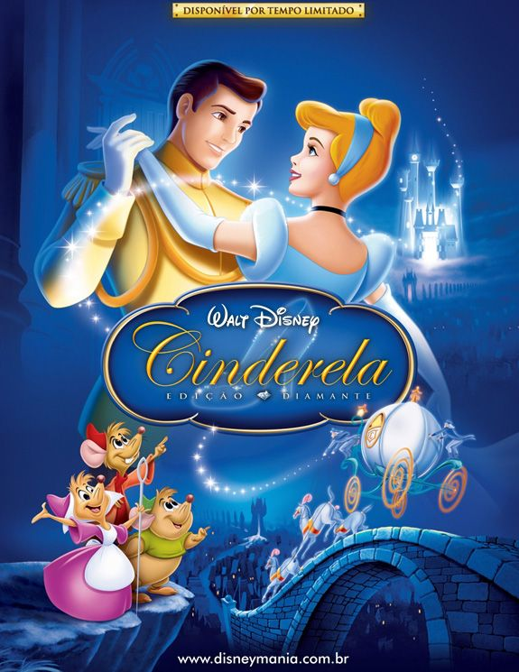

Fundado em 16 de outubro de 1923 por Walt Disney e seu irmão mais novo Roy, é uma divisão da Walt Disney Studios e a primeira empresa da Disney. O estúdio já produziu 61 filmes animados, começando com Branca de Neve e os Sete Anões, lançado em dezembro de 1937, até o mais recente, Wish: o Poder dos Desejos, de 2023.
| Enrolados | Cinderela | Branca de Neve | A Bela e a Fera |
|---|---|---|---|
 |
 |  |
 |
| Animação | Animação | Animação | Animação |
| Livre para todos os públicos | Livre para todos os públicos | Livre para todos os públicos | Livre para todos os públicos |
| 7 de janeiro de 2011 | 22 de maio de 1950 | 10 de janeiro de 1938 | 13 de dezembro de 1991 |
| Trailer | Trailer | Trailer | Trailer |